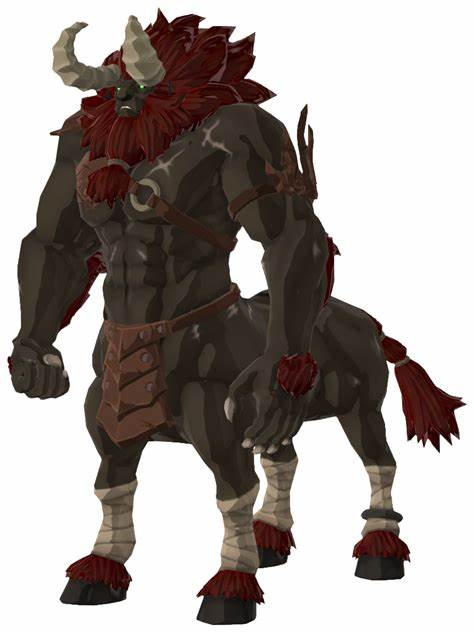

Les Lynels
Les Lynels sont parmi les ennemis les plus puissants de BOTW. Ils sont extrêmement dangereux et difficiles à vaincre.
Caractéristiques des Lynels :
- Grande taille
- Force et agilité exceptionnelles
- Utilisation d'armes puissantes
Galerie des Lynels
